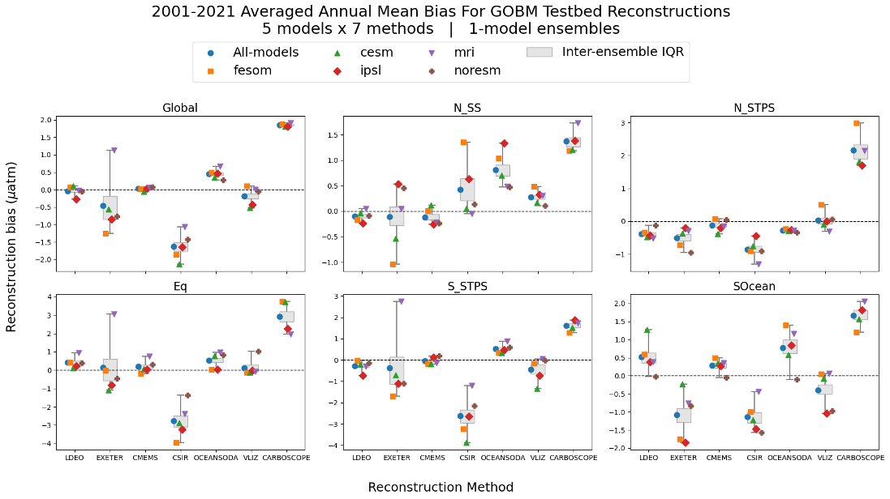
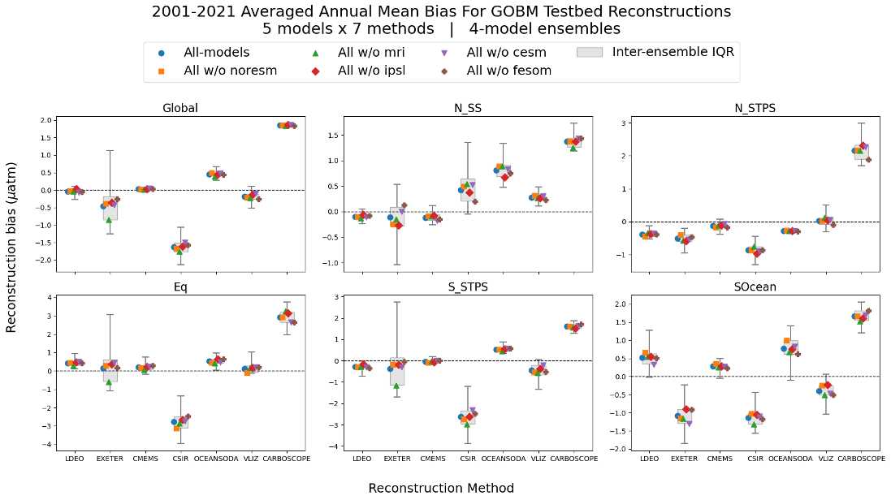
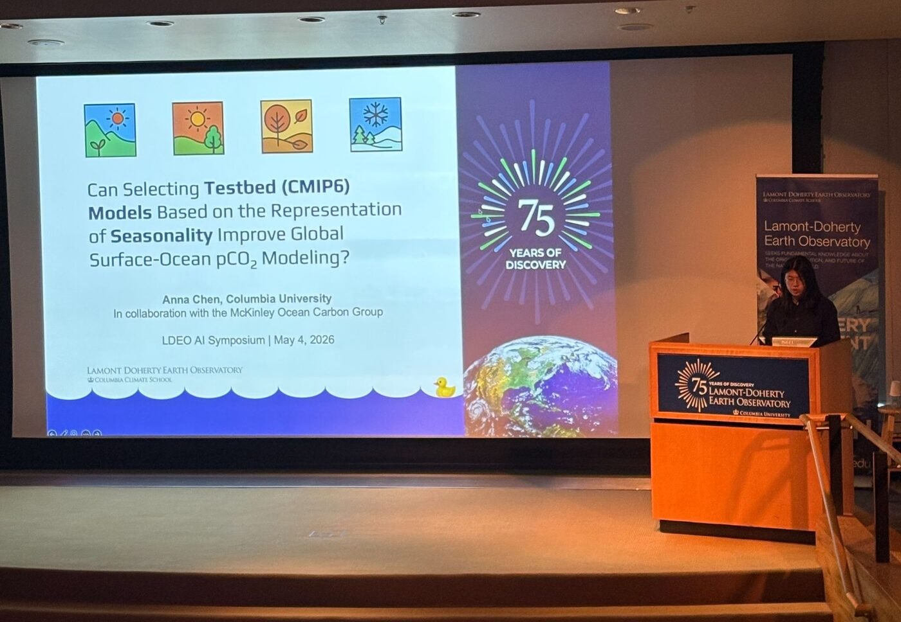

Evaluating the Impacts of Model Choice on Assessment of Surface Ocean pCO2 Reconstruction Skill in Climate Model Testbeds
The ocean absorbed roughly 29% of anthropogenic CO2 emissions over the past decade. Quantifying that sink from sparse measurements relies on observation-based data products, which are validated against Global Ocean Biogeochemical Models and Earth System Models used as testbed truths: the data product is given only the coverage of real observations, then asked to reconstruct the model's full pCO2 field.
Whether it matters which models serve as the testbed had not been tested. This project assesses 7 data products by ensemble-averaging according to testbed model choice, using 5 GOBMs over 2001–2021 and 6 triple-member ESMs over 1982–2023.
My role
I built and ran the analysis in Python. For every data product I computed bias, unbiased RMSE, and correlation against its testbed at regional, basin, and global scales, then applied the same metrics to each testbed model against independent observations from GLODAP, SOCAT, and the LDEO pCO2 database — and evaluated all 31 possible ensemble combinations of the five GOBMs.
The results show that ranking testbed models by their skill against observations has only a minor effect on assessed reconstruction skill, and that ensemble-averaging generally improves it. The equatorial and Southern Ocean subtropical biomes are the exception: there, including certain testbeds can marginally worsen ensemble-averaged skill, but never improve it. This work is my senior thesis and a first-author manuscript in preparation.


Materials
Read the AGU 2026 abstract
Over the past decade, the ocean carbon sink absorbed 29% of total anthropogenic CO2 emissions. To quantify this sink from sparse observations, Global Ocean Biogeochemical Models (GOBMs) and Earth System Models (ESMs) simulate the global ocean carbon cycle, typically at 1-by-1-degree horizontal resolution. Recent assessments of observation-based ocean carbon data products use GOBMs and ESMs as “testbed” truths: data products sample the testbeds at the spatio-temporal coverage of independent observations, then reconstruct surface ocean pCO2 using statistical and machine learning techniques. The testbed approach then allows for a comprehensive assessment of the data product’s ability to reconstruct the full field in the context of sparse pCO2 data coverage. It has not been studied whether differences in the testbed model skill in representing real-world mean and seasonality of pCO2 may impact testbed results. Thus, this study assesses the data products by ensemble-averaging based on their testbed model choice. We use 5 GOBMs over 2001–2021 and 18 ESM members over 1982–2023. Considering regional, basin, and global scales, the bias, unbiased RMSE, and correlation are calculated of each data product against its testbed. Likewise, the same metrics are computed for each testbed model against real-world independent data from GLODAP, SOCAT, and LDEO pCO2 databases. Results show that sorting the testbed models based on their skill against observations has a minor impact on the assessment of reconstruction skill across 7 data products. Echoing published findings, ensemble-averaging generally improves global and regional reconstruction skill compared to using single-member testbeds. Nonetheless, the equatorial and Southern Ocean subtropical biomes show greater sensitivity to testbed choice, where including certain testbeds can marginally worsen, but not improve, ensemble-averaged skill. This study highlights the versatility of testbeds and endorses the use of ensemble-averaging in multi-model testbed experiments, since specific testbed model choices can harm regional reconstruction skills, especially in observation-scarce and biogeochemically complex biomes.
AGU 2026 Annual Meeting, San Francisco · Session A072 — From Physics to
AI: Benchmarking, Bias Diagnosis, and Process Representation in Earth System Models.
Anna Chen, Galen A. McKinley, Thea Hatlen Heimdal, Amanda R. Fay.
Poster in preparation for AGU 2026 — it will be posted here once finished.

Presenting at the LDEO Mini-Symposium on AI-based Science, Spring 2026.
Also presented at
- AGU 2026 Annual Meeting, San Francisco (poster)
- Undergraduate Research Symposium, Columbia University, Fall 2026 (poster)
- McKinley/Lovenduski Group Meeting, CU Boulder, Summer 2026 (talk)
- Mini-Symposium on AI-based Science, LDEO, Spring 2026 (talk)